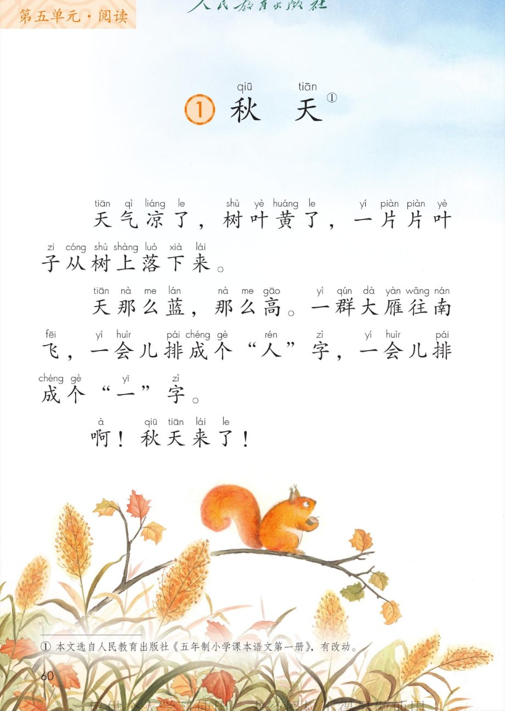
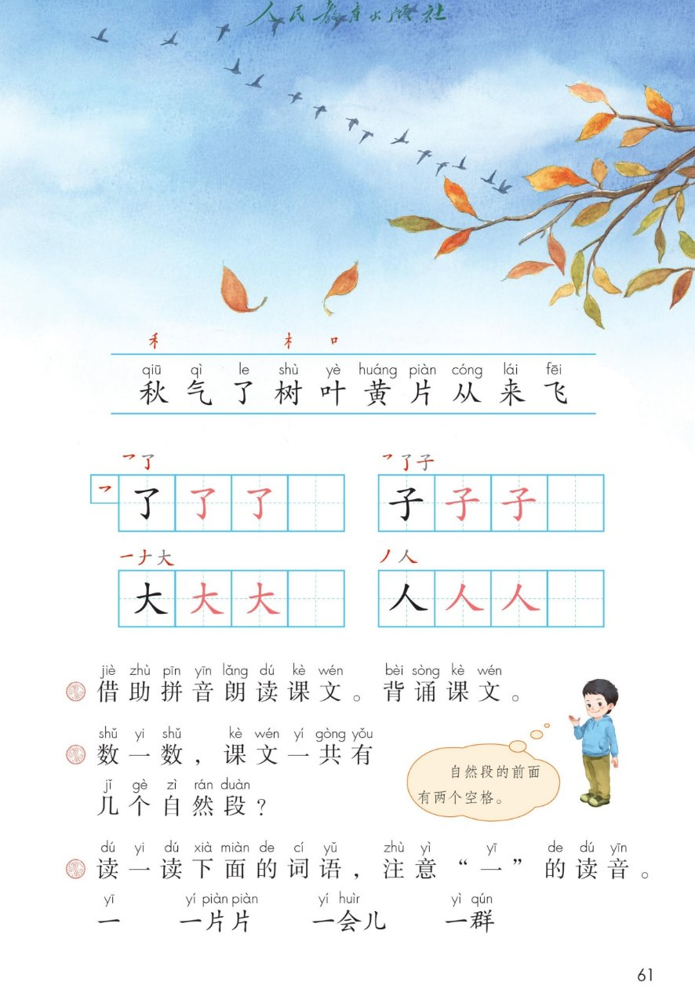

×
🔊 手机听不到声音怎么办？
① 先把手机
媒体音量调大 ，确认没开静音、没连蓝牙耳机；在微信里打开的，点右上角「⋯ → 用浏览器打开」。
② 还是没声音？到应用商店免费下载
Microsoft Edge 浏览器 （它自带朗读发声），用它打开本页面就能出声。
③ 换了 Edge 仍然没声音，说明这部手机的
硬件/系统不支持 网页朗读（多为老旧机型）；近几年买的新手机一般都能正常播放。
→ 打开声音自检
统编版 · 一年级上册 · 第五单元 · 阅读 · 课文1
① 秋天
天气凉了，树叶黄了，一片片叶子从树上落下来。
朗读背诵 数自然段 「一」的变调 闯关 8 题
这一课学什么： 借助拼音朗读课文、背诵课文；认识 10 个字，写好「了、子、大、人」；
数一数课文有几个自然段；再读一读「一」的四顶小帽子——一声、二声、四声都会变。
课本第 60 页 点一段读一段，先听再跟
读前小贴士： 课文有 3 个自然段 ，每个自然段前面空两个格 。点段落左边的小圆号码 1、2、3 可以数一数。🍂
🎵 全文连读
🔁 跟读模式（读完一段停一停）
课本第 61 页识字条 点一张读一张
识字条 · 连起来读
秋 气 了 树 叶 黄 片 从 来 飞 —— 「禾 」藏在秋里，「木 」陪着树，「口 」站在叶的左边
课本第 61 页田字格 先看笔顺，再动笔
课本第 61 页课后题 点号码听读，课文一共几个自然段
答案： 课文一共有 3 个自然段 。记住小窍门：自然段的开头空两个格 ，数一数开头空格的地方就知道了。🔢
课本第 61 页课后题 「一」会变声调的小魔术
「一」变调小魔术： 本调读一声；在四声 字前面变二声 （一片片、一会儿）；在二声 字前面变四声 （一群）。🎩
点题目可以听题，点选项就判对错，答完自动算分
已经答 0 题，答对 0 题。
点图放大

第 60 页 · 课文 · 秋天

第 61 页 · 识字条 · 田字格 · 课后题